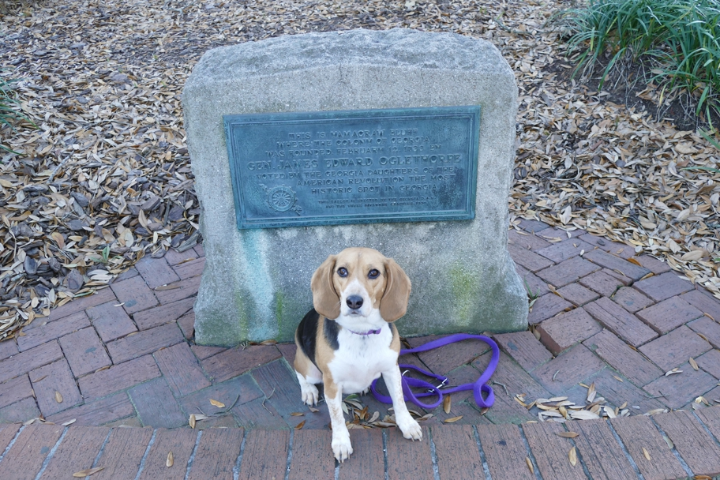

<--Previous Up Next-->

".... where the colony of Georgia was founded February 12, 1733...." Along Bay Street. Wallace felt like sleeping in; only Halley accompanied us to our outdoor breakfast.
Georgia Halley Beagle Savannah